Abra o Studio e escolha BASEPLATE

Foto da tela.
Projeto novo. Role a página para baixo até a fileira Abrir um modelo e clique no primeiro, o Baseplate.
- Quero continuar um jogo antigo
- Pode: Arquivo → Abrir do arquivo e escolha o que você salvou.
Decida o que você vai fazer
Foto da tela.
Cinco minutos, no máximo. Escolha uma destas três formas, ou invente:
Percurso — do começo ao fim sem cair. Lava, plataformas que somem, martelos.
Caça ao tesouro — espalhe moedas pelo mapa e conte quem pega mais.
Sala de desafios — portas com botão, cada uma abre a próxima.
Escreva numa folha em três linhas: o que o jogador faz, o que atrapalha, como ele ganha.
- Não consigo escolher
- Comece pelo percurso. É o mais rápido de montar e o mais fácil de testar.
- Quero fazer tudo
- Escolha dois obstáculos, não seis. Jogo pequeno e terminado vale mais que grande e pela metade.
Monte o cenário primeiro, sem código
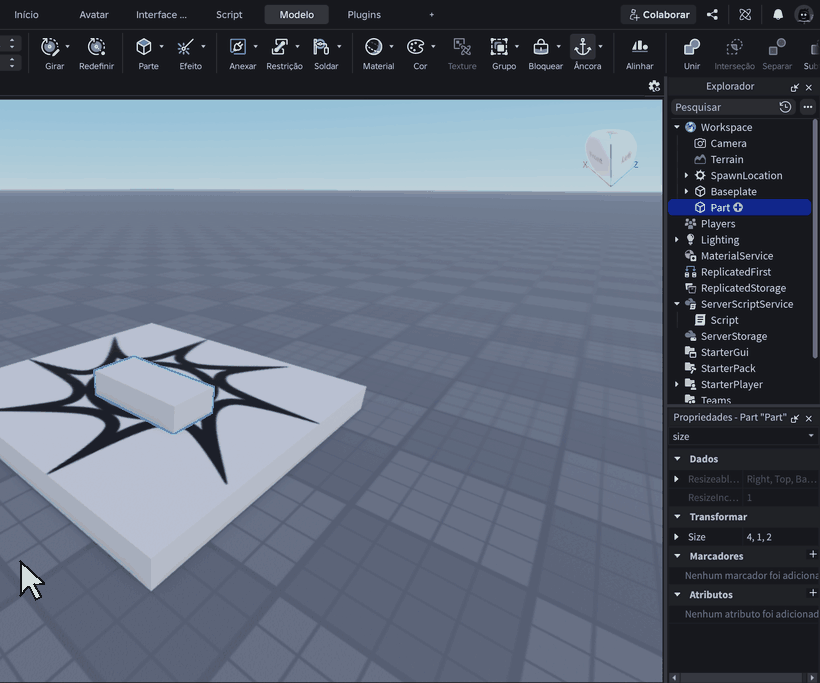
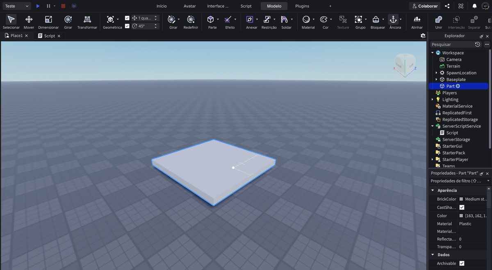
O clipe repete sozinho. Repare onde o cursor vai antes de clicar.
Quinze minutos só de blocos: crie, ancore, mude o size e a position, pinte.
Não ponha script nenhum agora. Monte o caminho todo primeiro, ande por ele no jogo, veja se dá para atravessar. Depois é que vêm as armadilhas.
- Minhas peças caem
- Faltou Âncora. Criou, ancorou.
- Não consigo pular de uma para outra
- Estão longe demais. O boneco pula uns 7 passos de altura e uns 10 de distância.
- Perdi uma peça de vista
- Clique no nome dela na lista e aperte F.
RECEITA: a peça que mata
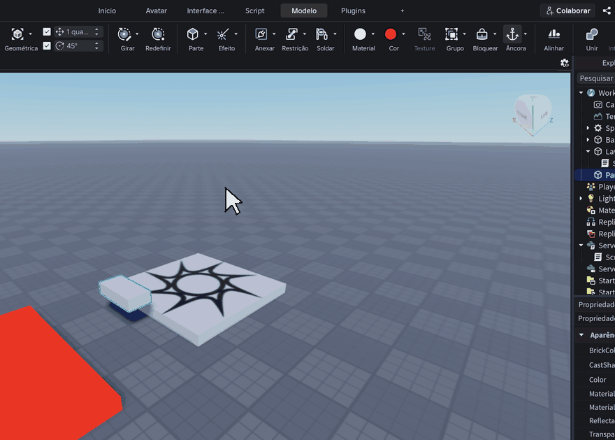
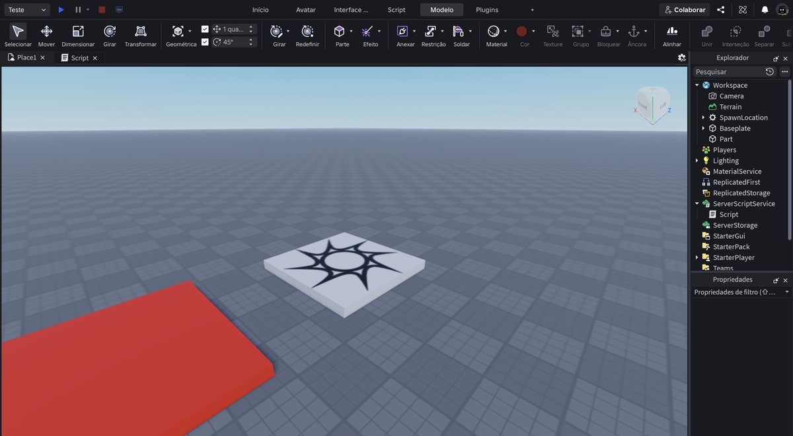
O clipe repete sozinho. Repare onde o cursor vai antes de clicar.
Vermelha, material Neon, com este Script dentro:
- local lava = script.Parent
- lava.Touched:Connect(function(parte)
- local humano = parte.Parent:FindFirstChild("Humanoid")
- if humano then
- humano.Health = 0
- end
- end)
Da Aula 2. Serve para lava, espinho, água venenosa — qualquer coisa que não se pode encostar.
Não digite as linhas em cinza. O editor escreve os end sozinho quando você aperta Enter. E não aperte Tab — ele já empurra as linhas para dentro.
- Sobraram end a mais
- Você digitou os que o editor já tinha escrito. Apague os extras até o código ficar igual ao da aula.
- Não morro
- O Script está dentro da peça? Sobrou risco vermelho?
RECEITA: a plataforma que some
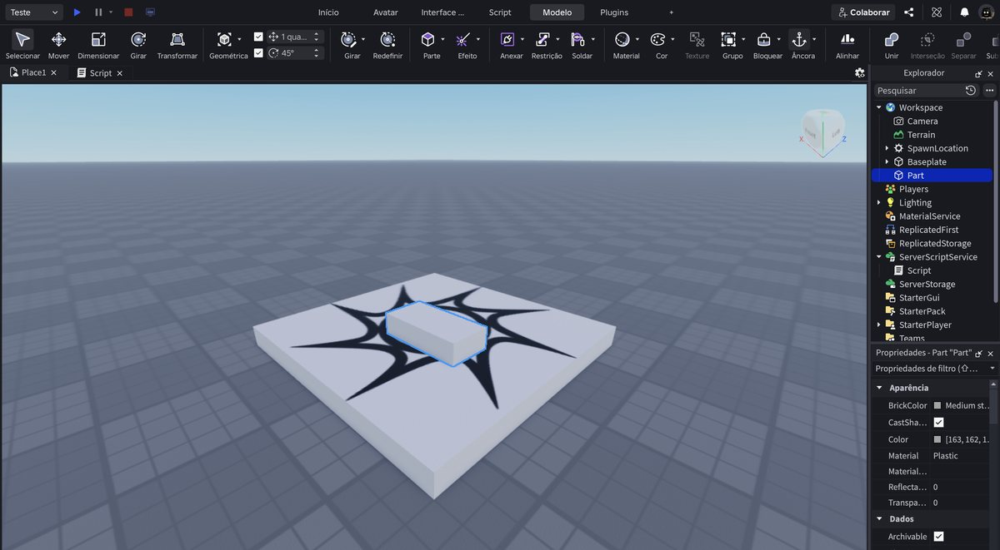
Foto da tela.
Uma peça normal com este Script dentro:
- local piso = script.Parent
- piso.Touched:Connect(function(parte)
- local humano = parte.Parent:FindFirstChild("Humanoid")
- if humano then
- piso.Transparency = 0.7
- piso.CanCollide = false
- task.wait(2)
- piso.Transparency = 0
- piso.CanCollide = true
- end
- end)
Da Aula 3. Mude o task.wait(2) para deixar mais fácil ou mais difícil.
Não digite as linhas em cinza. O editor escreve os end sozinho quando você aperta Enter. E não aperte Tab — ele já empurra as linhas para dentro.
- Sobraram end a mais
- Você digitou os que o editor já tinha escrito. Apague os extras até o código ficar igual ao da aula.
- Fica transparente mas não caio
- Faltou a linha do CanCollide.
RECEITA: o placar
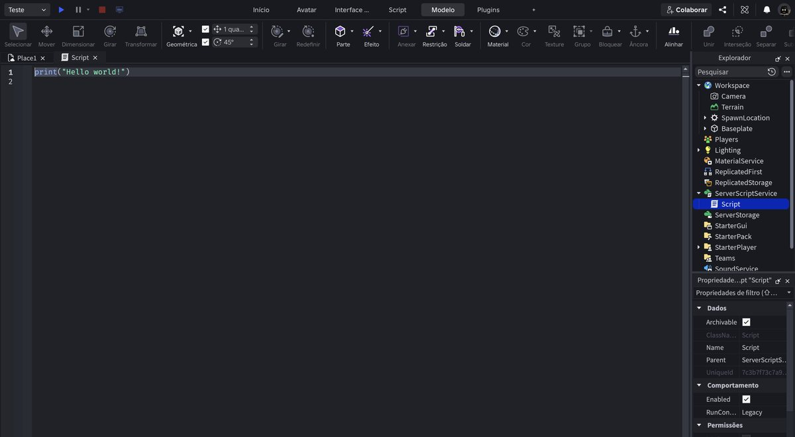
Foto da tela.
Este vai no ServerScriptService, não numa peça:
- game.Players.PlayerAdded:Connect(function(jogador)
- local pasta = Instance.new("Folder")
- pasta.Name = "leaderstats"
- pasta.Parent = jogador
- local moedas = Instance.new("IntValue")
- moedas.Name = "Moedas"
- moedas.Value = 0
- moedas.Parent = pasta
- end)
Da Aula 5. Sem ele, nenhuma moeda funciona.
Não digite as linhas em cinza. O editor escreve os end sozinho quando você aperta Enter. E não aperte Tab — ele já empurra as linhas para dentro.
- Sobraram end a mais
- Você digitou os que o editor já tinha escrito. Apague os extras até o código ficar igual ao da aula.
- Não aparece
- É leaderstats, tudo minúsculo.
RECEITA: a moeda
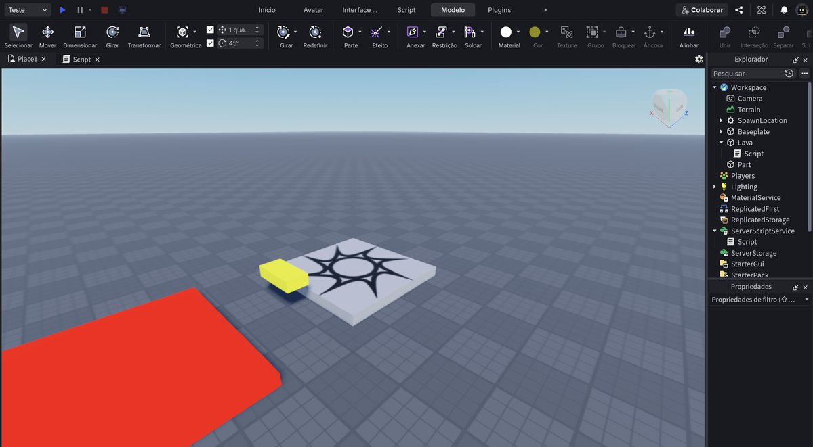
Foto da tela.
Peça amarela com este Script dentro. Precisa do placar do passo 6.
- local moeda = script.Parent
- moeda.Touched:Connect(function(parte)
- local jogador = game.Players:GetPlayerFromCharacter(parte.Parent)
- if jogador then
- jogador.leaderstats.Moedas.Value = jogador.leaderstats.Moedas.Value + 1
- moeda:Destroy()
- end
- end)
Da Aula 5. Faça uma, ponha o script, e só então duplique — a cópia já vem com o script.
Não digite as linhas em cinza. O editor escreve os end sozinho quando você aperta Enter. E não aperte Tab — ele já empurra as linhas para dentro.
- Sobraram end a mais
- Você digitou os que o editor já tinha escrito. Apague os extras até o código ficar igual ao da aula.
- O número não muda
- Falta o placar.
- As cópias não somam
- Você duplicou antes de pôr o script.
RECEITA: botão e porta
Foto da tela.
Duas peças: uma chamada exatamente Porta, e outra com este Script dentro.
- local botao = script.Parent
- local porta = workspace.Porta
- botao.Touched:Connect(function(parte)
- local humano = parte.Parent:FindFirstChild("Humanoid")
- if humano then
- porta.Transparency = 1
- porta.CanCollide = false
- task.wait(3)
- porta.Transparency = 0
- porta.CanCollide = true
- end
- end)
Da Aula 6. O script vai no botão, não na porta.
Não digite as linhas em cinza. O editor escreve os end sozinho quando você aperta Enter. E não aperte Tab — ele já empurra as linhas para dentro.
- Sobraram end a mais
- Você digitou os que o editor já tinha escrito. Apague os extras até o código ficar igual ao da aula.
- Diz que Porta não existe
- O nome da peça tem que ser exatamente Porta, com P maiúsculo.
RECEITA: o martelo que gira
Foto da tela.
Uma barra comprida e ancorada, com este Script dentro:
- local martelo = script.Parent
- while true do
- martelo.CFrame = martelo.CFrame * CFrame.Angles(0, 0.05, 0)
- task.wait(0.03)
- end
Da Aula 7. Salve antes de testar: laço mal escrito congela o Studio.
Não digite as linhas em cinza. O editor escreve os end sozinho quando você aperta Enter. E não aperte Tab — ele já empurra as linhas para dentro.
- Sobraram end a mais
- Você digitou os que o editor já tinha escrito. Apague os extras até o código ficar igual ao da aula.
- O Studio travou
- Faltou o task.wait dentro do laço.
RECEITA: a loja
Foto da tela.
Uma plataforma com este Script. Precisa do placar e de moedas.
- local loja = script.Parent
- local preco = 3
- loja.Touched:Connect(function(parte)
- local jogador = game.Players:GetPlayerFromCharacter(parte.Parent)
- if jogador then
- local moedas = jogador.leaderstats.Moedas
- if moedas.Value >= preco then
- moedas.Value = moedas.Value - preco
- parte.Parent.Humanoid.WalkSpeed = 50
- end
- end
- end)
Da Aula 8. Mude o preco e o que ela vende.
Não digite as linhas em cinza. O editor escreve os end sozinho quando você aperta Enter. E não aperte Tab — ele já empurra as linhas para dentro.
- Sobraram end a mais
- Você digitou os que o editor já tinha escrito. Apague os extras até o código ficar igual ao da aula.
- Compro sem ter moeda
- Confira o >= e o valor do preco.
Escolha duas receitas e ponha no seu mapa
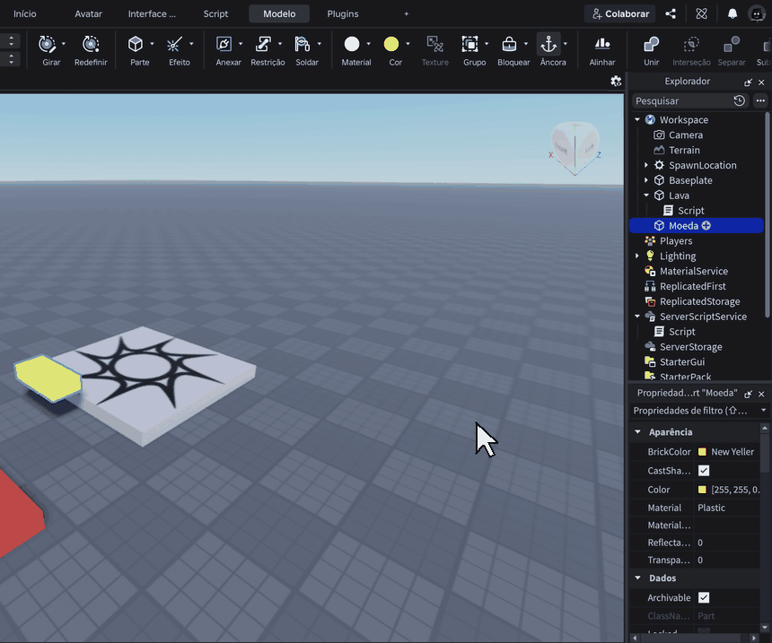
O clipe repete sozinho. Repare onde o cursor vai antes de clicar.
Duas, não seis. Ponha uma, teste, conserte. Só então ponha a outra.
Quem põe tudo de uma vez não descobre qual quebrou.
- Pus tudo e nada funciona
- Apague os scripts, ponha um só, teste. Depois o próximo.
- Deu erro vermelho na tela
- Leia o nome que aparece no erro — quase sempre é uma peça com nome diferente do que está no código.
Teste como se fosse outra pessoa
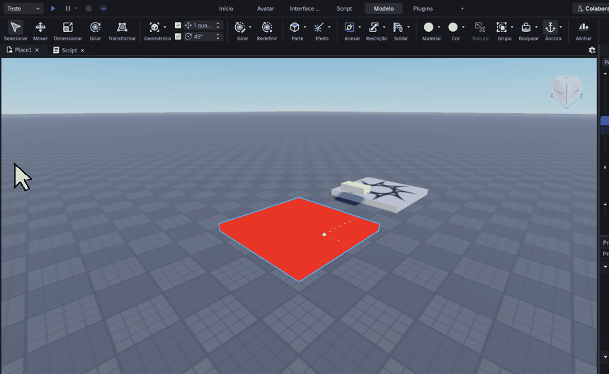
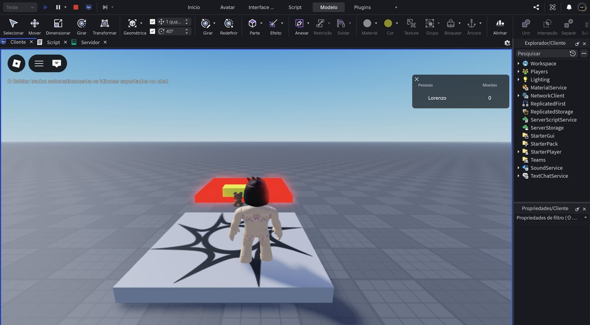
O clipe repete sozinho. Repare onde o cursor vai antes de clicar.
Aperte o ▶ e jogue o seu jogo até o fim, sem trapacear.
Depois faça de propósito o que um aluno chato faria: pular fora do caminho, ficar parado em cima da lava, voltar para trás.
- É impossível de terminar
- Afaste menos as plataformas ou aumente os tempos de espera.
- Dá para pular o percurso todo
- Ponha paredes nas laterais, ou lava embaixo.
Conserte as três piores coisas
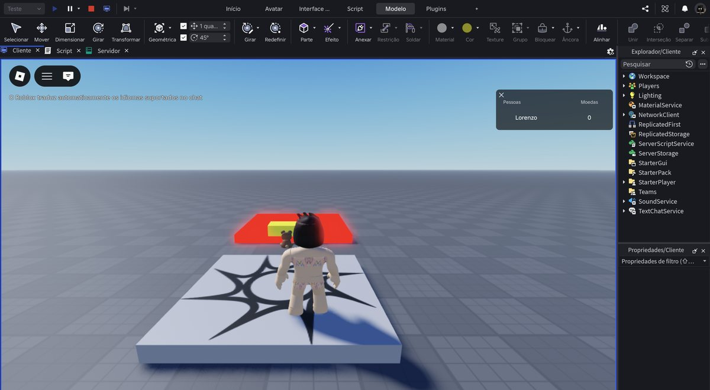
Foto da tela.
Escolha as três que mais atrapalharam no teste e conserte só elas.
Não tente deixar perfeito. Tem que publicar hoje.
- Tudo está ruim
- Escolha as três que atrapalharam mais. Perfeito não existe.
Publique
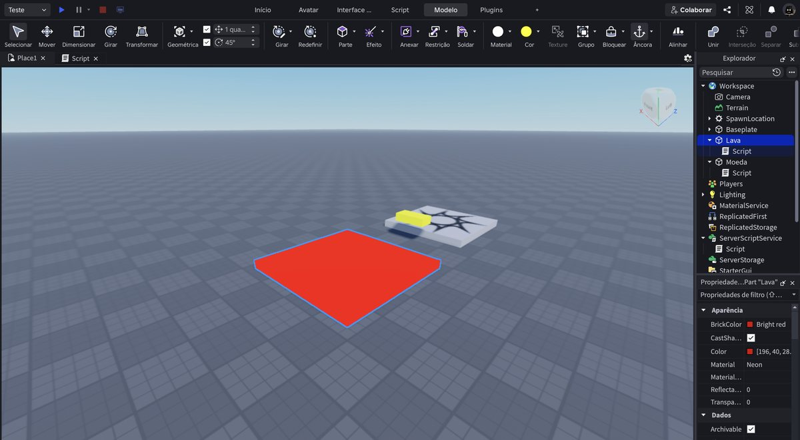
Foto da tela.
Arquivo → Publicar na Roblox. Nome, descrição, e desligue o Compartilhamento de dados.
Depois, no site, deixe o jogo Público.
- Esqueci como era
- Aula 4, passos 9 a 16.
- Já publiquei antes
- Então é só Publicar na Roblox de novo: ele atualiza sem pedir nada.
Dê um nome que dê vontade de clicar
Foto da tela.
Jogo do Pedro não convida ninguém. Não pise no vermelho convida.
Na descrição, escreva em uma frase o que a pessoa tem que fazer.
- Não sei o que escrever
- Use a primeira das três linhas que você escreveu no papel, no passo 2.
Troque o link com dois colegas
Foto da tela.
Mande o seu link para duas pessoas e peça o delas.
- O link do colega não abre
- O jogo dele ainda está privado. Ele precisa fazer o passo 15 da Aula 4.
Jogue o jogo dos dois
Foto da tela.
Jogue até o fim, se der. E diga para cada um uma coisa que você gostou e uma que travou.
Uma de cada. Não é para fazer lista de defeitos.
- Não consegui passar
- Isso é informação útil. Diga exatamente onde travou.
Conserte uma coisa que te falaram
Foto da tela.
Volte ao Studio, conserte uma das coisas que os colegas apontaram, e publique de novo.
Isso é o que acontece em jogo de verdade: alguém joga, reclama, você arruma.
- Não deu tempo
- Anote o que falaram. Conserta na próxima.
Salve e guarde o link
Foto da tela.
Ctrl + S → Salvar em arquivo.
E copie o link do seu jogo para um lugar que você não perca — ele é seu, e continua no ar depois que o curso acabar.
- Perdi o link
- Entre em create.roblox.com com a sua conta. Está tudo lá.